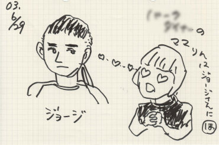
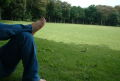

2003.06.29 筑波PARK DINER
PULLING TEETHレコh発ファイナル
出演:JURASSIC JADE・PULLING TEETH
NORTH MAN DRIVE・WATER PONP PRIYER
C.C.G.・MIND TOUCH・akashic records
FLASH BACK・MOUSE PEACE・WORD OF RIGHT
●ＪＵＲＡＳＳＩＣ ＪＡＤＥ’Ｓ setlists
ドク・ユメ・スペルマ
くたばりやがれ
Ｐｌａｓｔｉｃ Ｗａｔｅｒ Ｍｏｔｈｅｒ
香港庭園
新曲2
新曲6（I found out)
新曲3（Gaza)
新曲5（Fighet For What？）
新曲4(ひこうきのうた）
メドレー（Ａｆｔｅｒ Ｋｉｌｌｉｎｇ Ｍａｍ〜D-DAY）
CAN YOUR BIRD SING?
鏡よ鏡
●ＭＥＭＢＥＲ’Ｓ comment
ＨＩＺＵＭＩ
ＮＯＢ
ながぁ〜い一日でした。楽しいライブでした。すごい声援でした。嬉しかった。
良い汗かけて幸せでした。対バンの青年達の素直さや頑張りが気持ち良かったです。
今回HAYAは前回PARK DINERに伺ったときのリヴェンジを心に誓っていたはず。
しかし、ペダルのベルトが切れた！
またまた口惜しくて眠れなかったのでは・・・。
GEORGE
ＨＡＹＡ
えー、そーいえば筑波って東京から鬼門でない？来てくれた皆さん申し訳ございません、今回はペダルのチェーンがぶち切れて途中からワンバスになってしまいました。
あと爪先にシンバルが食い込み、親指血まみれに（笑）！
全く前回の神経麻痺といい、今回のチェーンぶっちぎれといい…はぁ…
次回（呼んで頂けますかね？）こそ！まさにリベンジ！三度目の正直！頑張ります！
（筑波の皆さん私を見捨てないでください、本当に。）
で演奏頑張りましたがいかがでした？

copyright（C)HIZUMI
（自主規制ぼかし入り）
| ALBUM |  |
●BBS comment
日曜日筑波で・・・。 投稿者：NOB-JURASSIC JADE 投稿日： 6月28日(土)02時36分43秒
遅くなりましたが、お知らせです。
JURASSIC JADEは6月29日（日）筑波PARK DINERでライブをやります。
PULLING TEETH・NORTH MAN DRIVE・WATER PONP PRIYER・C.C.G.・MIND TOUCH・akashic records・FLASH BACK・MOUSE PEACE・WORD OF RIGHTさんたちと。
16:00OPEN 16:30STARTです。
お時間おありの方、是非是非お越しください。
チケット取り置きさせてくださると嬉しいです。メールでご連絡ください。
遅くなりましたが… 投稿者：粕谷@MIND TOUCH 投稿日： 6月29日(日)06時52分09秒
ご挨拶が遅くなってすいません…MIND TOUCHです。
今日は筑波でまたご一緒させていただけると言うことで、俄然気合い入れて頑張ります！
また熱いLIVE期待しています♪
今日はヨロシクお願いします！！
http://www.tosp.co.jp/i.asp?i=MIND01
お疲れさまデス☆ 投稿者：AJIROCK666@WORD OF RIGHT 投稿日： 6月30日(月)20時53分27秒
お疲れ様でした!!PARKDINER店長＆WORD OF RIGHT の安島です。昨日は、茨城、つくばに熱い風が吹きました☆最高のステージに良い汗をかき、上がりました☆これからも地元にバンドと共に汗かきながら盛り上げていきます☆また是非来て下さいね!!
6.29筑波 投稿者：mori@MOUSEPIECE Dr. 投稿日： 7月 1日(火)02時57分51秒
お疲れ様でした。ご一緒させて頂いたMOUSE PIECEというバンドの
moriといいます。生で観たのは初めてだったんですが、
ぶっ飛びました。ヤバかったです。
＞NOBさん リンクをお願いします。コメントは
"千葉、柏NO.1へヴィサウンド、MOUSE PIECEのHP"
とでも書いてやって下さい。よろしくお願いします。
http://members.jcom.home.ne.jp/mousepiece/
楽しかった！！！ 投稿者：NOB-JURASSIC JADE 投稿日： 7月 1日(火)16時27分59秒
またまた、遅くなりました。
筑波PARK DINERにお越しの皆さん、対バンの皆さん、スタッフの皆さん、企画のWORD OF RIGHTの方々、お疲れさまでした。ありがとうございました。
すごく気持ちの良い一日でした、長ぁ〜くはありましたが・・・。
ライブ終了後色んな方々が話し掛けてくれて、嬉しかった。
「曲どうやって作るんですか？」とか聞かれるのって、実はなかなか無いんだ。
激しさや素直さがとても新鮮で嬉しかったです。
＞AJIROCK666@WORD OF RIGHT 様
安島さん、お疲れ様。良き兄貴って感じですね。
良い若い衆が出る企画ライブで楽しかったです。
これからも誘ってください。よろしくです。
それから、佐賀CHOKEによろしく！旅気をつけて・・・。
＞mori@MOUSEPIECE Dr. 様
お疲れ様！楽しいライブにご一緒出来て感謝です。
ライブ後に話し掛けてくれたのも嬉しかった。
また、どこかで一緒にやりましょう！メンバーの皆さんによろしく。
リンク早急にやります。相互でお願いできますか？
遅くなってしまいましたが、 投稿者：粕谷@MIND TOUCH 投稿日： 7月 3日(木)16時46分32秒
29日の筑波はお疲れ様でした♪
本当に最高な一日で、マジ楽しかったです♪
自分ら2回目の対バンだったのですが、本当に仲良く接してくれて嬉しかったです!!!
今後もまた是非ご一緒させていただける事を楽しみにしています!!
今後も是非ヨロシクお願いします♪
アリガトウございました!!
http://www.tosp.co.jp/i.asp?i=MIND01
BACK TO